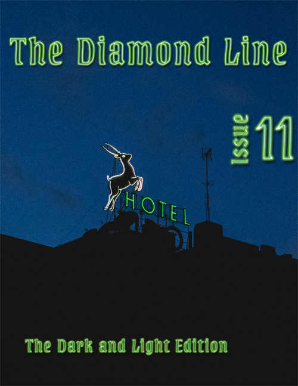
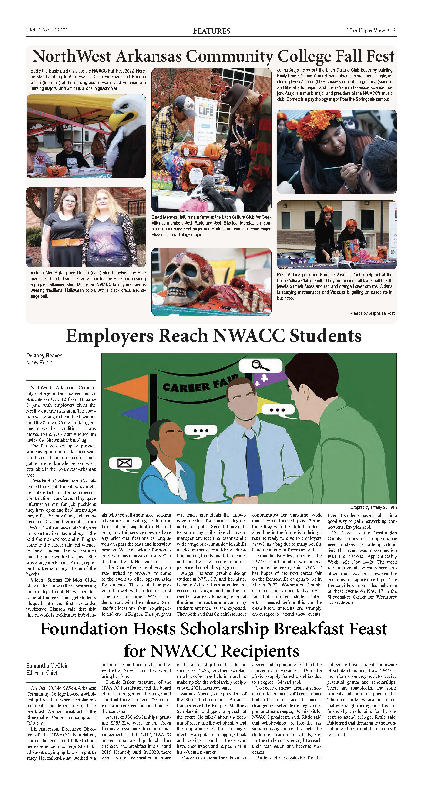
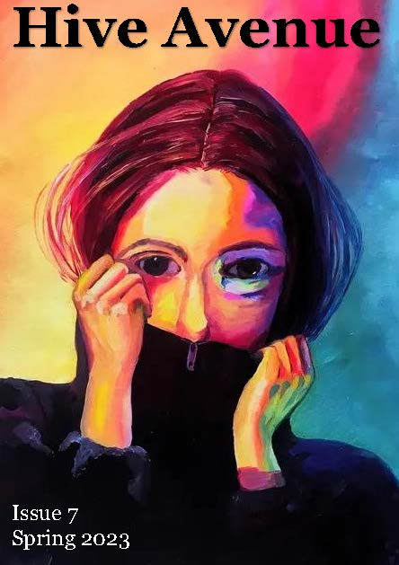

This was a colaborative project with a team of designers to create a unique magazine layout and design. The team created a theme and hosted an open art submission to gather poetry, prose, and art for the Daimond Line, a literary magazine for the University of Arkansas. My role was to provide the layout of the magazine and create over 15 illustrations to further support the stories and create cohesive magazine.

Worked with another grahic design to collaborate making a newspaper feature layout page. This one second place in newspaper feature page layout at the Arkansas College Media Association April 14, 2023.

A literary magazine for the NorthWest Arkansas Community College. I was the only graphic designer working on this project, but I collaborated with writers and editors to bring their visions to life.
Download Issue 7 Hive Avenue(PDF)